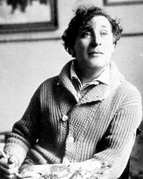

경력
1919년 모스크바 국립유대극장 벽화장식 담당
수상경력
1948년 베네치아 비엔날레전 판화상
단체전
2011 인상파 이후 서양미술의 거장전, 광주시립미술관, 광주
추가정보
러시아의 비테프스크 출생. 표현주의를 대표하는 에콜드파리 최대의 화가이다. 유대인 집안에서 태어나 1907년 페테르부르크에 가서 미술학교에 다닌 후, 1910년 파리로 나와 A.모딜리아니와 F.레제 등을 배출한 아틀리에 '라 뤼슈'에서 그림공부를 하며 큐비즘기법을 익혔다. 1911년 앙데팡당전(展)에 첫 출품, 괴이하고 환상적이며 특이한 화풍으로 전위파화가와 시인들을 놀라게 하였다.
1911년 베를린에서 첫 개인전을 열어 성공한 후 그해 결혼을 위해 일시 귀국하였으나 마침 제1차 세계대전이 일어나고, 잇달아 1917년 러시아혁명이 일어나자, 모국에 머물면서 미술단체의 요직을 맡았다. 고향에 미술학교를 열고, 1919년 모스크바의 국립유대극장의 벽화장식을 담당하기도 하였으나, 사회주의 리얼리즘과 맞지 않아 1922년 베를린, 1923년에는 파리로 돌아왔다.
이때부터는 유화 외에도 화상(畵商) 폴라즈의 의뢰에 따라 많은 판화를 제작하여 에콜 드 파리의 유력한 작가로 주목받게 되었다. 그리고 환상적인 작풍으로 초현실주의 미술에 큰 영향을 끼쳤다. 그러나 나치스의 유대인 박해가 점차 격화되자 1941년 도미, 제2차 세계대전 중에는 미국에서 지냈다. 1947년 다시 파리로 돌아와, 1950년부터는 남프랑스의 방스에 영주의 터전을 잡았다.
1948년 베네치아 비엔날레전(展)에서 판화상을 받았으며, 유화·판화·벽화(뉴욕 메트로폴리탄 오페라극장의 벽화, 파리오페라극장의 천장화 등)·스테인드 글라스·조각·도기(陶器) 제작을 비롯하여 무대 장식 분야에 이르기까지 폭넓은 활동을 하였다. 초기 작풍은 큐비즘의 영향을 받았으나, 점차 슬라브의 환상감과 유대인 특유의 신비성을 융합시킨 독자적인 개성을 강하게 풍겼다.
소박한 동화의 세계나 고향의 생활, 하늘을 나는 연인들이란 주제를 즐겨 다루었고, 자유로운 공상과 풍부한 색채는 보는 사람의 마음을 맑고 깨끗하게 풀어주는 매력이 있다. 작품으로 《손가락이 7개인 자화상》 《바이올린 연주자》 《기도하고 있는 유대인》 《에펠탑 앞의 신랑과 신부》 《서커스》 등과, 자서전에 《나의 인생 Ma Vie》(1965)이 있다.
20 세기 회화의 대표 거장인 마르크 샤갈은 러시아 비테프스크의 유대인 집안에서 태어난 프랑스 화가이다 . 그는 유화 , 판화 , 벽화 , 스테인드글라스를 비롯해 무대장식 , 오페라하우스 , 미술관 등 거대한 건축물의 벽화와 천장화에 이르기까지 98 세라는 그의 긴 생애만큼이나 폭 넓은 예술활동을 펼친 예술가였다 .
그러나 그는 그 무엇보다 “변형” 의 화가였다 . 그는 야수주의의 강렬한 색채와 입체주의의 공간에 대한 새로운 개념을 받아들였고 , 여기에 고향 러시아 비테프스크의 유대인 마을에서 얻은 그의 어린 시절의 경험과 환상을 융합시켜 샤갈만의 낭만적이고 독창적인 표현을 발전시켜나갔다 . 또한 그는 많은 전위예술가들처럼 예술의 유형을 변화시키고 중첩시킴으로써 장르와 색 , 형태를 변용할 줄 알았던 예술가였다 . 이러한 그의 특성을 담은 그림들은 초현실주의 미술에 큰 영향을 끼치게 되며 , 동시대의 어떠한 미술사조에도 속하지 않는 순수하고 신비스러운 그만의 작품세계를 만들게 된다 .
그가 자서전에서 “내 그림 중에 비테프스크로부터의 영감이 담겨있지 않은 작품은 한 점도 없다” 고 말했듯 , 그의 작품에는 꽃과 동물 모티브 , 시골마을의 풍속 , 신부 , 연인 등 일상의 소재들이 자유로운 형태로 등장한다 . 더불어 소박한 동화의 세계나 고향 생활 , 하늘을 나는 연인과 같은 주제를 즐겨 그린 그는 < 나와 마을 >(1912), < 도시 위에서 >(1914-18), < 산책 >(1917-18) 등과 같은 꿈처럼 아름다운 작품을 남긴다 . 이처럼 오랜 삶의 경험을 통해 얻어진 그의 기억과 환상의 조각들은 시간의 영역을 뛰어넘어 캔버스를 통해 시각의 영역으로 우리 곁에 남게 되었다 .
일생에 걸쳐 샤갈이 추구한 열망과 사랑의 메시지 , 그 열정은 풍부하고 자유로운 그의 작품 속에 살아있으며 , 그의 색채는 여전히 꿈의 나래를 펼치고 있다 .